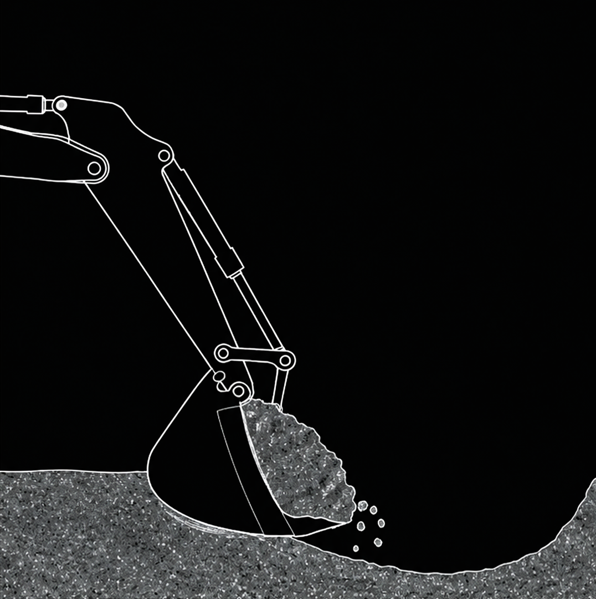
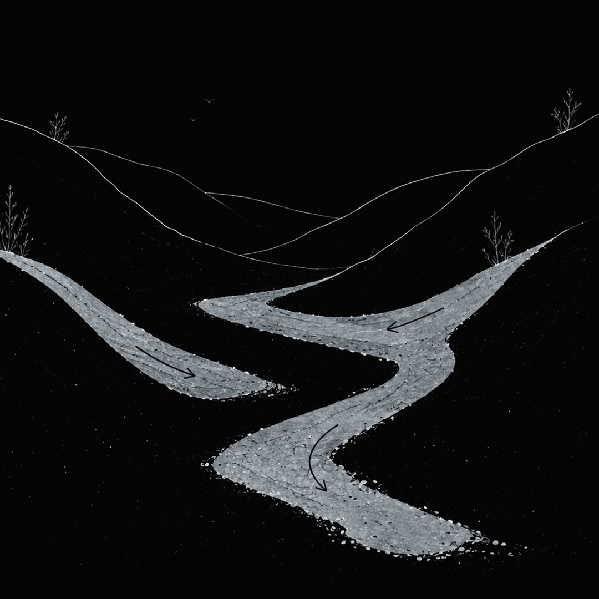
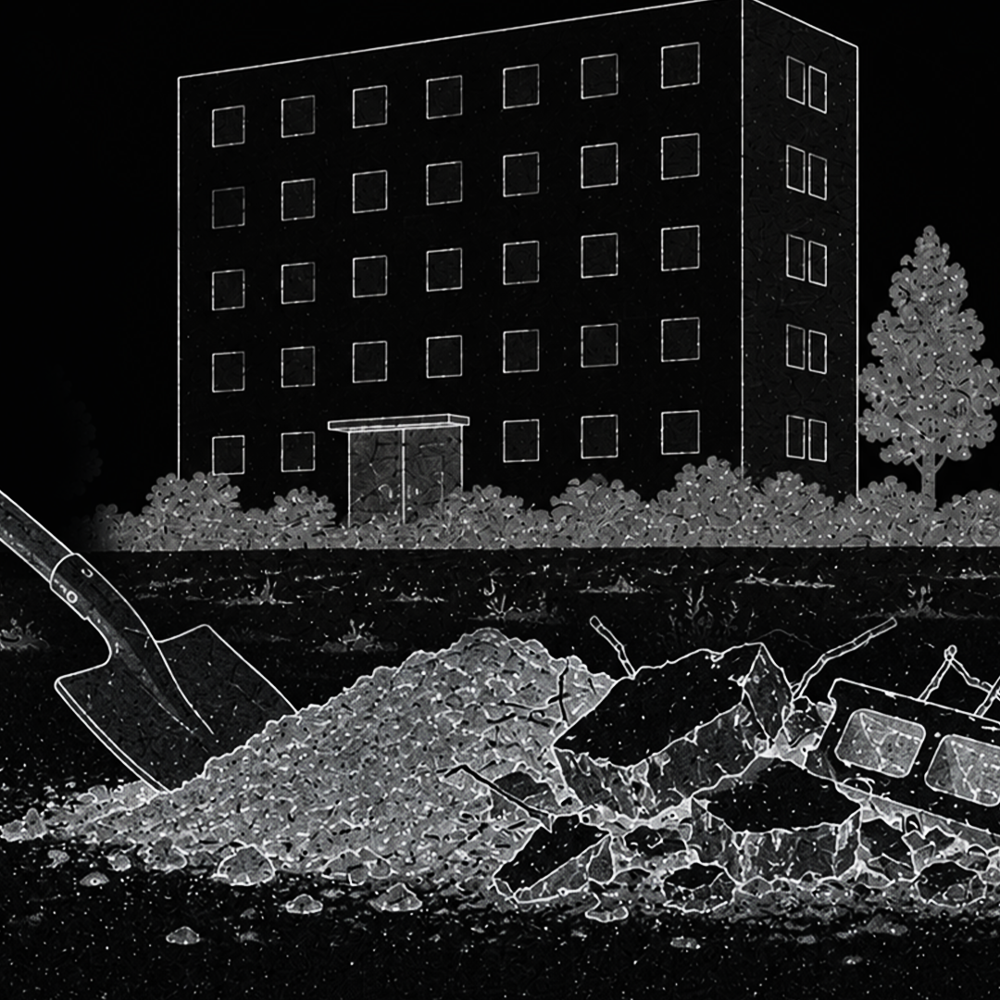
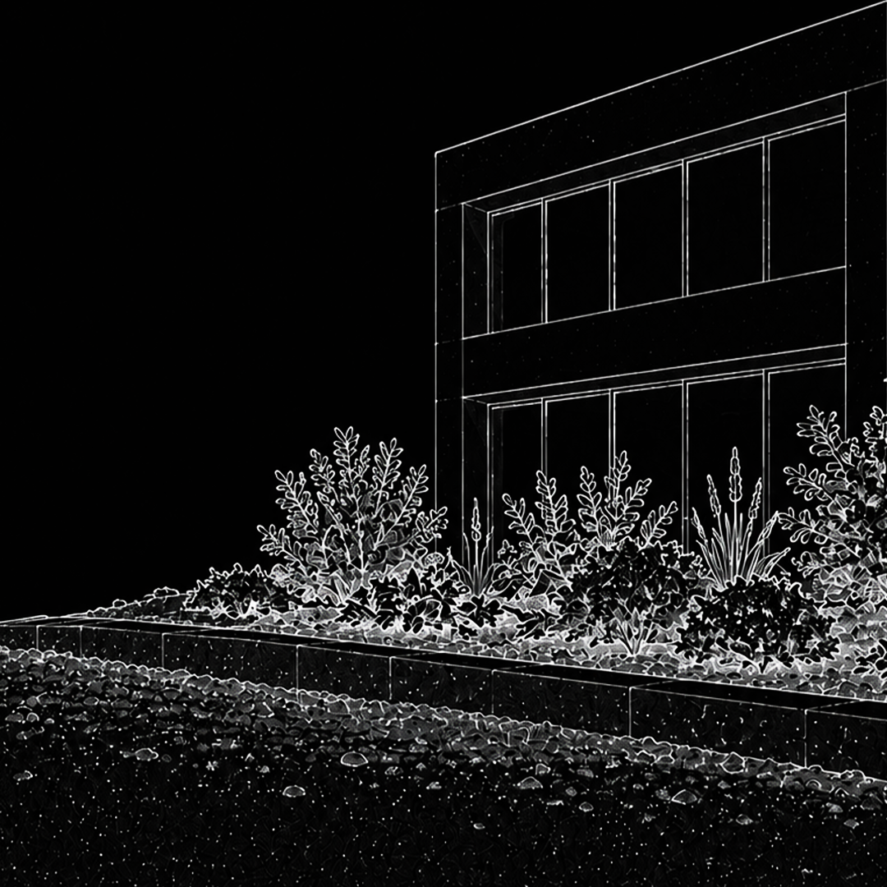

Name something is not an innocent act. Civil derives from civitas, a decision to coexist, a gathering under common law. But the moment civitas defines self-existence, it simultaneously produces its outside. What is included is named; what remains outside does not require a name. It simply becomes the other, the unnamed, the unqualified.
Civilized soil operates through the same logic. It is not a neutral description but a judgement. The moment soil receives this qualification, a coordinate, a parcel, a title, it ceases to be soil. It becomes a numerical entity. A legal abstraction.

Process called civil engineering, a discipline that orders nature, arrests flow, as if the act of building were inseparable from the act of civilization. What it actually does is excavate, transport, pour, compress, and seal, finalizing civilization.
This is where the category of civilized soil reveals its structural dishonesty. It is the end product of a chain; nomad as soil metabolized freely, barbaric as soil extracted and displaced, vagabond as soil discarded or warehoused, and proletariat soil disciplined and redeployed. Consequently, it appears as if none of this ever happened. The form veils itself from its origin.
The moment soil forgets itself, civilization appears.
Modernism does not simply use civilized soil. It produces it. The tabula rasa is not a metaphor; it is an operational requirement. Before building, you must demolish. Before civilizing, you must excavate.

Modernism cannot build on what already exists. It requires a ground voided of prior claims; untamed, uncontrolled. Nomad soil resists this. It flows, settles, and accumulates without asking permission. So it must first be declared illegible. Then invalid. Then removed. This is not incidental to modernism. It is its mechanism.
The Babylon tower does not arrive on empty ground by accident, but the unity of one to reach the gods' language. Civilized soil speaks that same language today: glass, steel, concrete, repeated until the punishment is issued. Despite the coexistence of differences, it's as if it were a single, supreme language, blended with the arrogance of capital.
Soil is the labyrinth. Not the danger inside it since danger left long ago. What remains is the walk; every step landing on something different, every layer carrying a different density, a different memory, a different smell. No one knows where it leads, which is not a warning. That is the offer.
Civilized soil is the material residue of the disciplined voice of arrogance.

Somebody excavated this ground. Somebody loaded it onto a truck, drove it to the edge of the city, and dumped it where nobody would ask questions. Somebody else brought new soil back — cleaned, compacted, chemically adjusted, stripped of everything that made it. Transform into a designed landscape, a tower wall, a playground in the kids' park.
It is designated through taxonomy through civil.

The tower does not know its own biography. It does not know which valley was filled to level its foundation, which hill was carved to feed its concrete, which hands compacted the soil it stands on. Not know, because it was not built to know. It was built to stand.
And standing, for civilized soil, is enough. To stand is to have already won the competition. The height itself becomes the evidence.
— Look how far we have come, the tower says.
— Look how civilized, from every mouth.
— But come from where? From whom?
— Belong who? For what reason has it become civilized?
This is not a metaphor. This is a construction document.